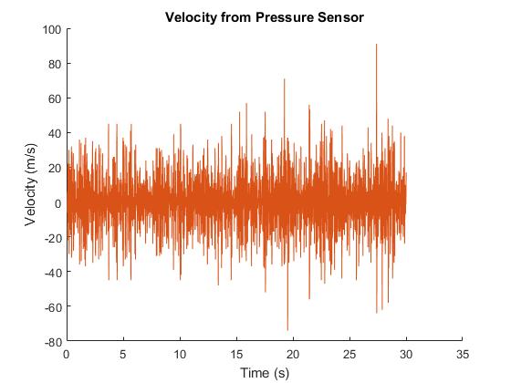
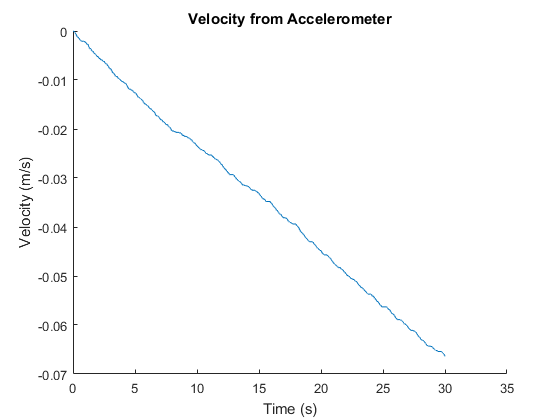
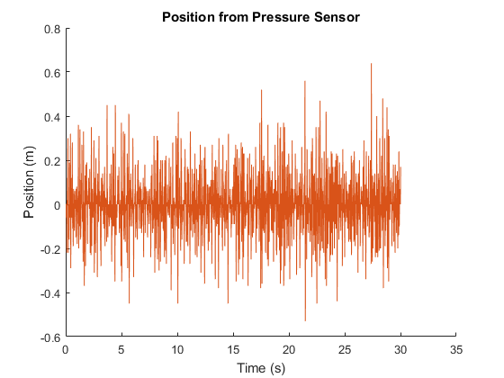
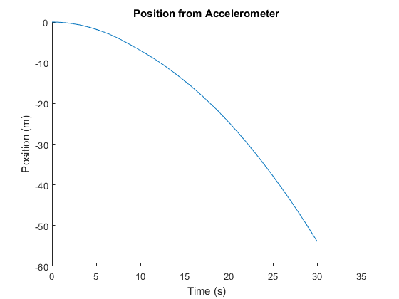
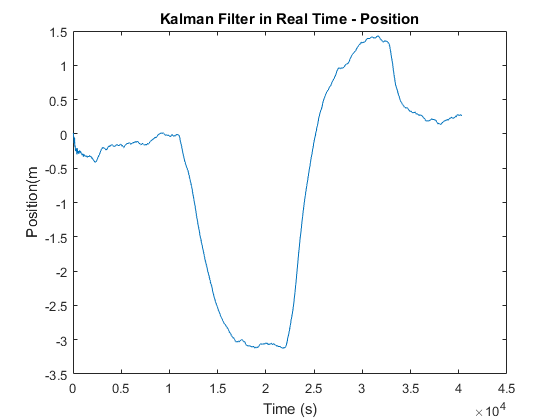

Altitude Estimate device
In order to investigate Kalman Filter algoritms on hardware, a sensor sytem was constructed using an accelerometer, a barometer and an Arduino to estimate the height. Sensor readings were collected and analyzed through MATLAB before the algorithm was implemented on the Arduino.
Velocity and Position Results from sensors




Kalman Filter Results
